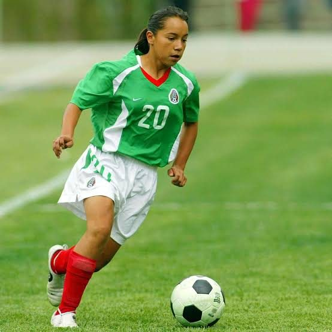
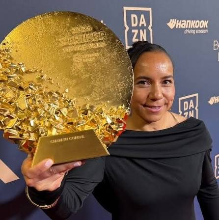

Delantera nacida en Ecatepec, Estado de México (11 de septiembre de 1991). Pentacampeona de goleo en la Liga MX Femenil y, en 2026, la primera mexicana en ganar el Trofeo Gerd Müller a la mejor delantera del mundo.
A los 13 años rompió un Récord Guinness en el Palacio de los Deportes de la Ciudad de México: mantuvo el balón en el aire durante 1 hora y 45 minutos sin que tocara el piso.
De niña sufrió acoso escolar por su timidez y su complexión. Dominó las categorías juveniles en México y Estados Unidos mientras terminaba la universidad en Louisville, y después empezó una carrera por Finlandia, España y México.
Pasa el cursor sobre el cubo para detenerlo.

Con el 20 del Tri juvenilGira el carrusel con las flechas, con las teclas ← → o tocando una tarjeta. Cada etapa muestra sus cifras.
Arrastra para girar la cancha y pasa el cursor sobre una columna para ver el detalle. Cambia de serie con los botones.
Mueve el cursor sobre cada tarjeta para inclinarla.

En octubre de 2026, en la gala de France Football en Londres, fue elegida mejor delantera del mundo. Es la primera mexicana en ganarlo. Pachuca le contabiliza 42 goles en la temporada, más 11 con la Selección.
Clausura 2023, Clausura 2024, Apertura 2024, Clausura 2025 y Apertura 2025. Es la única con cuatro consecutivos.
Los marcó en 17 jornadas del Apertura 2025 y es el récord de los torneos cortos. En el Apertura 2026, Geyse Ferreira se quedó a un gol.
La IFFHS la reconoció en 2024 (44 goles) y en 2025 (57: 50 con Pachuca y 7 con México).
En agosto de 2024 se convirtió en la primera jugadora en marcar 100 goles con el club.
Fue la máxima goleadora de la Liga F en la temporada 2017-18 con el Levante.
Ganó los premios a mejor jugadora y goleadora en 2022-23, 2023-24 y 2024-25. Así pasó de jugadora que algunos creían "en retiro" en 2021 a la gran figura del futbol femenil mexicano.
Pasa el cursor o toca cada trofeo para girarlo y ver el contexto.